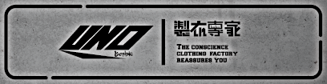
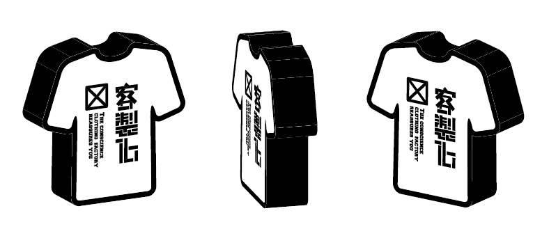
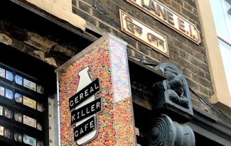
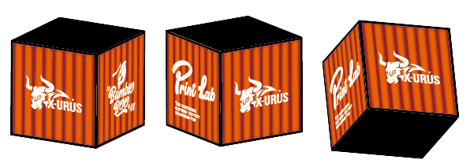

商店招牌
此招牌以石材質感為基底，搭配黑體字體設計的Logo與文字，下方嵌入燈管，使整體更具質感與層次感。

設計與心路歷程
上圖展示了招牌設計的最終確定樣式，而右側則是過去曾提供的設計版本。在設計過程中，我經歷了一段探索與磨合的旅程。
初期的設計更多地以實用為考量，但隨著對品牌調性的深入理解，我逐步融入了更多質感與細節，試圖在視覺效果與實際功能之間找到最佳平衡。
招牌燈箱


設計理念
此燈箱設計的初衷以吸引目光為核心，因此以造型鮮明且主題突出的設計作為發想基礎。 此圖所示的咖啡廳圖片成為此案的重要參考來源，其簡潔明確的設計風格啟發了燈箱的創作方向。 由於本案的主題聚焦於團體服，因此選用短袖圓領T恤作為燈箱的核心造型，能夠直觀傳遞產品特色，並迅速吸引目標觀眾的注意力。
小燈箱
每件設計產品都會融入適當的點綴元素，以提升整體的質感與設計層次。
本案亦不例外，採用燈管燈箱作為基底，並結合案主旗下的籃球球衣品牌標誌，巧妙地將品牌形象融入設計之中，不僅提升了燈箱的視覺吸引力，也有效強化了整體店面的品牌辨識度。
這樣的設計不僅傳遞了專業與質感，還充分展現了品牌精神，為店面營造出更具特色的形象氛圍。